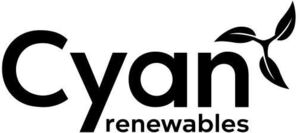

Trade Mark Journal No.2025/045 7 November 2025
WO0000001868365 (19,37,39,42)
Office of origin: Australia
Date of International Registration:23 June 2025
Date of designation in the UK:
23 June 2025

International priority date claimed: 10 January 2025
(Australia)
(2511936)
- Class 19
- Artificial fish reefs, not of metal; non-metal artificial fish reefs.
- Class 37
- Installation of offshore pipelines; offshore construction; marine construction; underwater construction services; laying of submarine communication cables; laying of submarine cables; laying of underwater communication cables; laying of underwater cables; laying of foundations; laying of cable; cable laying; husbanding services being repair and maintenance of vessels; maritime fitting out; installation of subsea pipelines; repair or maintenance of vessels; repair or maintenance of vessels and providing information relating thereto; providing information relating to the repair or maintenance of vessels; repair or maintenance of vessels and provision of information relating thereto; construction; repair and maintenance of wind power plants; maintenance and repair of wind power plants; construction, erection, installation, repair, renovation, servicing, maintenance and dismantling of wind farms; consultancy relating to the installation, maintenance and repair of windmills and wind turbines; installation, maintenance and repair of windmills and wind turbines.
- Class 39
- Vessel transport; towing of vessels; maritime transport; operation of maritime tugs; vessel towing services; vessel salvage services; vessel salvage; providing ocean transportation, storage and delivery services; ocean shipping services; marine towing services; marine transportation services; rental, booking and providing of ships; chartering of watercraft; chartering of watercraft, yachts, ships, boats and water vehicles; chartering of marine vessels; ship chartering services; chartering of boats; chartering of ships; vessel rental services; vessel rental; rental of vessels.
- Class 42
- Underwater structural inspection services; marine surveying services; geophysical exploration for the gas industry; geophysical exploration for the oil industry; geophysical research services; geophysical exploration for the oil, gas and mining industries; geotechnical investigations.
Cyan Renewables (Australia) Holdings Pty Limited
Representative: Integrated IP, 1/186 Hampden Road, Nedlands WA 6009, AUSTRALIA